Video Tape Transcript of HyperLook SimCity Demo
This is a transcript of a video taped demonstration of SimCity
on HyperLook
in NeWS. The normal text is Don
Hopkins talking. The "quoted italic text" is Abbe Don
talking, who's running the camera. The (parenthetcal italic text)
is extra annotation and explanation that's not on the video tape.
-- Beginning of Video Tape --
This is the HyperLook user interface
system, written in NeWS, and it's running
on a Sun on OpenWindows 3.0, and this is SimCity,
and application that I ported to HyperLook.
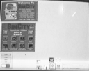
Now we can press a button to play a city, and it will load a map of that.
This is the overall map view, and this is the editor.
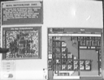
I can drag this rectangle around to scroll the map.
And then I can throw it, and it has some inertia, so it bounces around.
And then with this "Zoom" button here, I can zoom my view in,
to look closer and closer into the map, so that we're actually scooting
around quite close to the city.

And then, we can actually edit in this scale. (Wee!) Put some roads down.
I think you can get even closer. And then you can zoom out.
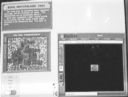
All this is written in PostScript, all the graphics. The SimCity engine
is in C, but all the user interface and the graphics are in PostScript.
The neat thing about doing something like this in HyperLook is that HyperLook
is kind of like HyperCard, in that all of the user interface is editable.
So these windows we're looking at here are like stacks, that we can edit.
Now I'll flip this into edit mode, while the program's running. That's a
unique thing.
Now I'm in edit mode, and this reset button here is just a user interface
component that I can move around, and I can hit the "Props" key,
and get a property sheet on it.
I'll show you what it really is. See, every one of these HyperLook objects
has a property sheet, and you can define its graphics. I'll zoom in here.
We have this nice PostScript graphics editor, and we could turn it upside
down, or sideways, or, you know, like that. Or scale it. I'll just undo,
that's pretty useful.
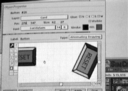
This just defines what the button looks like. Here, there's a flip function:
Special... Flip Top/Bottom. I'll just center them, and apply, and now we
have a little upside-down reset button.
So we have these Open Look components up here. I'll put this into edit mode.
See, I can highlight all the components.
HyperLook is integrated with The NeWS Toolkit,
so we can get all these ancient looking Open Look menus and what not, and
do things like cut this slider out here, and stick it onto here, to set
the tax rate.
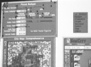
This slider happens to set the transportation fund. Every interface object
here has a script that defines its behavior, and this guy says his action
is to send the SetTransportationFund message to MyStack. The scripting language
for the HyperLook system is PostScript, and some people complained about
that, so Arthur van Hoff wrote a C to PostScript compiler, so that they
can program in C. But however, I'd rather program in PostScript, myself.
Woops. Let me put the button back on the window. There's quite a possibility
for user interface vandalism in this system, so what we've done is make
the user interface editor be just a user interface component that's in the
stack, that you can remove to make the stack not editable. I've done some
amount of magic to make SimCity editable, but when it's delivered as a product,
it's just with a runtime system and not editable.
We will go back and turn on Auto-Budget. Ok, now this is showing us something's
happened, and I can click in here to bring my other view there.
The neat thing is that this view here itself is just another user interface
component, and I can copy and paste that, and have multiple views. Each
one of these animated scrolling SimCity editors, once I've made one, I can
put them anywhere. This window, you can click here to get three of them.

I put this nice high level component into this user interface system, and
now anybody can just cut and paste it.
One of the neat components that HyperLook comes with is the graphics editor,
which is pretty ubiquituous. Like if I were to edit this button by hitting
the properties key, I get this property sheet that has a graphics editor
in it.
Now this property sheet itself is a stack that I can edit. So its graphics
editor, the menu here, and all this stuff is just fair play.
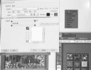
So when you make a new component class, you also construct another property
sheet for it, or just copy one that almost does what you want, and then
edit it so that it has the new things.
That completely separates this notion of property sheets from the user interface,
because you can just plug in a new set of property sheets that have a different
look and feel, like if you want to give more novice people the ability to
edit their user interface, you could have a simpler set of property sheets.
So now we're going to get weird. I'm going to pause SimCity so it doesn't
take all the CPU time, and iconify it. And of course, when you iconify it,
the icons are miniatures of the window, and they're active too, so when
I scroll these views around in the uniconified overall window, they keep
scrolling down here in the icon.
You just get all this stuff for free with PostScript. Well, you know, it's
not exactly free, but... ha ha!
Now here is, oh yes, right here, this is a stack full of components, of
clocks. You can get a property sheet on any of these clocks. The property
sheet has three graphics editors, for the face and the two hands. We could
just change the color of the hand, or change the total look of anything.
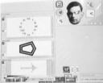
The whole thing is just Legos. The property sheet just plugs the drawing
into the clock, and the clock knows how to rotate the hands around the face.
"That's all the same object with different representations?"
Right. One of the data types this system knows is the structured graphics
drawing. It plugs it into this property sheet with Alan Turing's head. It
just lets me edit the three instance variables.
There's this protocol for property sheets of taking the instance variables,
letting you edit them, and then putting them back in when you hit apply.
As long as your property sheet plays that protocol, you can plug and play
different property sheets, and customize them.
We could make some really crazy looking clocks. Here's a good way to make
crazy looking clocks. Woah, oh, let me show you one other thing first.
This clock stack is a warehouse of objects, this is a bunch of examples
of objects that I might want to use elsewhere. So I hit the "Install"
button, this now installs them into the user interface editor. I'll make
myself a new stack. I get a brand new stack. I go into edit mode, and there's
this edit menu, and I select "New...", and it's added this menu
of new items that I can create! That "Install" button has added
this "Neat Clocks" submenu to my edit menu.
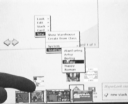
So now I can get a "Freaky Clock". And I can get rid of this "Neat
Clocks" stack here. And then I can go get other warehouses. Say I wanted
a warehouse of Open Look components, then I could just plop them down. New...
System... Color Selector. Boing. Now I can select colors from this.
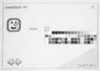
Anyway, now here's another neat way of making patterns.
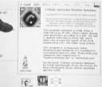
This is a "Cellular Automata Machine" program, and it's a little
klunky on the user interface side, but we've got several pages. This is
the introduction. It shows you this real time cellular automata, and you
can draw in it with the mouse.
(Check out my collection of stuff about Cellular
Automata for more information!)
There are different controls: we can set how fast it goes, start and stop,
and there's all these different rules that you can run, that look totally
different.
There's Life, then there's Brian's Brain. And you can draw in any of them.
And there are interesting initial configurations, like the heat rule. Heat
diffusion is good to start with a circle in the middle. And then you can
always draw.
Now the editor lets you fill it with random numbers, and heat diffusion
does a good job on that. And you can do some other crazy things that are
hard to explain, but ...
The really useful thing that this is good for is this background button
labeled "Tile", and we can just go whomp, and just tile the background
with the pattern, so it's an interesting screen background generator!
We can also copy the image to the clipboard, and I'll open up a graphics
editor, um, where's my Royal Pine, yeah. So here's a graphics editor, and
I can paste this image into my graphics editor, and go in there and do neat
stuff with it. Clip it to an interesting shape, wee!
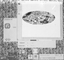
I can bring this into my graphics environment, and I can take this structured
PostScript graphic, this Royal Pine Car Freshner, and then I can take it
back over here to the Cellular Automata Machine, and then paste it in.
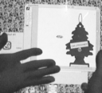
Then I can copy that back out. What I like doing is to paste the Royal Pine,
oh, first let's cool this down a little bit. You paste the Royal Pine, then
you let it go a little bit, then you stop it, and then you paste it again.
Woops, oh, my goodness. Here's let's do another rule.
OK, the good one is ld-heat, ok, very subtle, very subtle. Ok, copy that,
paste it into here, and then you stop it, and then you paste it again, then
you copy it out, and you go here and paste it into the graphics editor,
and you have this nice air freshner with an aura!
So who knows what people may decide to do with this kind of stuff. But once
you can plug things into each other very easily, and have ubiquituous graphics,
it becomes very interesting. Now I could go and use this car freshner, I
could copy it onto my clipboard, and go to my new stack, and paste it in,
and now it's a button, so now I can make it do things when I click on it.
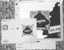
Oh, oh, oh, oh! Here's a useful little program. When I was working at Sun,
my manager came and said, "I need to know you happyness index, a number
from one to ten. It doesn't matter how you come up with your happyness,
but you have to remember the algorithm you use, so that you can give me
the same happyness index later, and we can track your happyness." So
what we did, we made "Happy Tool".
This is a HyperLook version of HappyTool. It's going to be a really great
thing, once we get this on the network with the biorhythm daemon and birthday
dragon and everything else integrated. Basically, you can dial how happy
you are, and then, once you've got that, you can click on the face, and
it puts it into your clipboard, and you can paste it into the graphics editor.
So now you can paste these into your letters to mom, or whatever, or even,
you know, paste them into the Cellular Automata Machine!
You can actually get some really good effects by pasting happy faces into
the Cellular Automata Machine. Yeah, let's do a monster. Yeah, ok. I have
found the face of Barney in here.
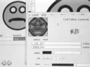
Ok, let's get a good one here.
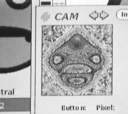
Let's do a little more symetrical rule here, then paste away. Ok, a little
more steam. Oh, ok, here we go, yeah, ok. Aaah.
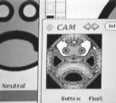
Yeah, ok, symetry, that's where it's at. Aaauugh! Yeah, try it the other
direction.
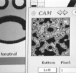
"What happens if you put Turing's face in there?"
Oh, Turing's face! Where did I put that? It's over here.

You can hit "Props". Just copy that out.
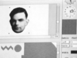
Bring him to the top. And paste!
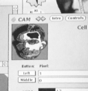
Aaah! It melted.
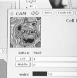
Oh wait, let's try it this way. Woah. Oh, oh, and there are other rules
that do different things. Let's try pasting Turing's face here.
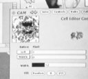
Oh yeah. Or the big happy face. Woops! Well that slagged. Oh yeah!
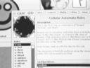
-- End of Video Tape --